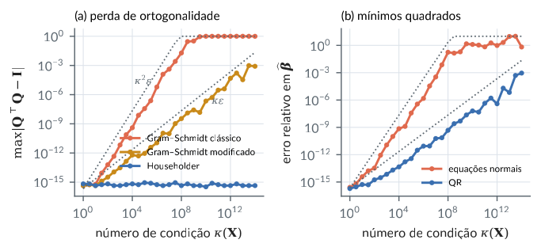
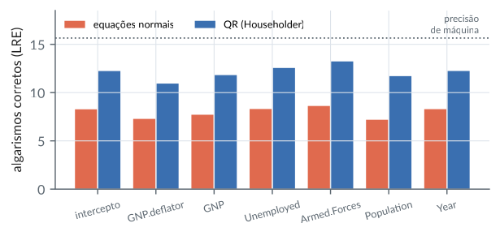
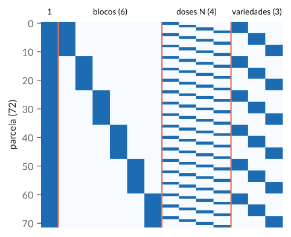
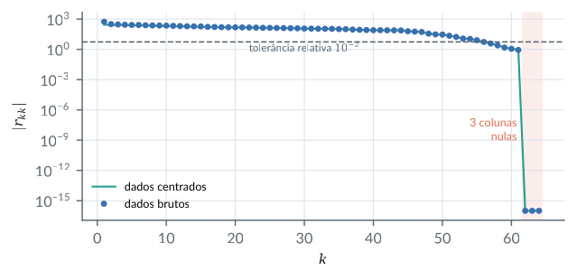
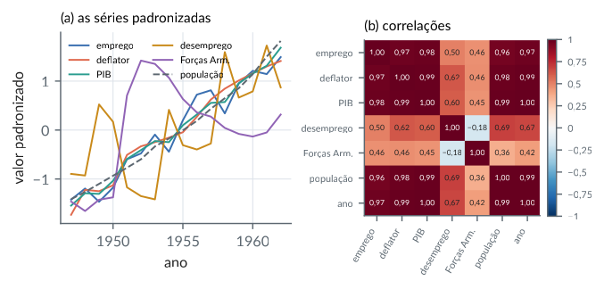

2. Posto, sistemas lineares e as fatorações LU e QR
Material reprodutível do Capítulo 2 do livro.
Exemplos
Posto de matrizes e desigualdades de posto
R/cap02/01_posto.R
# Cap. 2: Posto de matrizes e desigualdades de posto
posto <- function(A) qr(A)$rank # posto via QR (tolerância padrão)
A <- matrix(c(1, 2, 0, 3,
2, 4, 1, 7,
3, 6, 1, 10), nrow = 3, byrow = TRUE) # linha 3 = linha 1 + linha 2
B <- matrix(c(1, 0,
0, 1,
1, 1,
2, -1), nrow = 4, byrow = TRUE)
c(posto_A = posto(A), posto_At = posto(t(A)), posto_AtA = posto(crossprod(A)))
c(posto_AB = posto(A %*% B), cota = min(posto(A), posto(B)),
sylvester = posto(A) + posto(B) - ncol(A)) # r(A) + r(B) - n <= r(AB)
# posto da soma: r(A + C) <= r(A) + r(C)
C <- outer(c(1, -1, 2), c(0, 1, 1, 0)) # matriz de posto 1
c(posto_soma = posto(A + C), cota = posto(A) + posto(C))Saída
posto_A posto_At posto_AtA
2 2 2
posto_AB cota sylvester
2 2 0
posto_soma cota
3 3python/cap02/01_posto.py
"""Cap. 2: Posto de matrizes e desigualdades de posto."""
import numpy as np
posto = np.linalg.matrix_rank # posto via SVD (tolerância padrão)
A = np.array([[1, 2, 0, 3],
[2, 4, 1, 7],
[3, 6, 1, 10]]) # linha 3 = linha 1 + linha 2
B = np.array([[1, 0], [0, 1], [1, 1], [2, -1]])
print("posto A, A', A'A:", posto(A), posto(A.T), posto(A.T @ A))
print("posto AB:", posto(A @ B), " cota:", min(posto(A), posto(B)),
" Sylvester:", posto(A) + posto(B) - A.shape[1])
C = np.outer([1, -1, 2], [0, 1, 1, 0]) # posto 1
print("posto(A + C):", posto(A + C), " cota:", posto(A) + posto(C))Saída
posto A, A', A'A: 2 2 2
posto AB: 2 cota: 2 Sylvester: 0
posto(A + C): 3 cota: 3Forma escalonada reduzida, bases dos quatro subespaços e fatoração de posto
R/cap02/02_escalonamento.R
# Cap. 2: Forma escalonada reduzida, bases dos quatro subespaços e fatoração de posto
escalonar <- function(A, tol = 1e-10) {
R <- A; m <- nrow(R); n <- ncol(R); pivos <- integer(0); i <- 1
for (j in seq_len(n)) {
if (i > m) break
k <- which.max(abs(R[i:m, j])) + i - 1 # pivotamento parcial
if (abs(R[k, j]) < tol) next # coluna sem pivô
R[c(i, k), ] <- R[c(k, i), ] # troca de linhas
R[i, ] <- R[i, ] / R[i, j] # pivô igual a 1
for (l in setdiff(seq_len(m), i)) R[l, ] <- R[l, ] - R[l, j] * R[i, ]
pivos <- c(pivos, j); i <- i + 1
}
R[abs(R) < tol] <- 0
list(R = R, pivos = pivos)
}
A <- matrix(c(1, 2, 0, 3,
2, 4, 1, 7,
3, 6, 1, 10), nrow = 3, byrow = TRUE)
e <- escalonar(A)
e$R; e$pivos
r <- length(e$pivos) # posto = número de pivôs
# Bases: C(A) = colunas pivô de A; R(A) = linhas não nulas de R
base_col <- A[, e$pivos, drop = FALSE]
base_lin <- e$R[1:r, , drop = FALSE]
# N(A): uma solução por variável livre
livres <- setdiff(seq_len(ncol(A)), e$pivos)
base_nul <- sapply(livres, function(f) {
x <- numeric(ncol(A)); x[f] <- 1; x[e$pivos] <- -e$R[1:r, f]; x
})
base_nul; A %*% base_nul # zeros
# Fatoração de posto: A = (colunas pivô) x (linhas não nulas de R)
max(abs(base_col %*% base_lin - A))
# Compatibilidade de Ax = b (Rouché-Capelli)
b1 <- c(1, 3, 4); b2 <- c(1, 3, 5)
c(r_A = r, r_Ab1 = qr(cbind(A, b1))$rank, r_Ab2 = qr(cbind(A, b2))$rank)Saída
[,1] [,2] [,3] [,4]
[1,] 1 2 0 3
[2,] 0 0 1 1
[3,] 0 0 0 0
[1] 1 3
[,1] [,2]
[1,] -2 -3
[2,] 1 0
[3,] 0 -1
[4,] 0 1
[,1] [,2]
[1,] 0 -4.440892e-16
[2,] 0 0.000000e+00
[3,] 0 0.000000e+00
[1] 4.440892e-16
r_A r_Ab1 r_Ab2
2 2 3python/cap02/02_escalonamento.py
"""Cap. 2: Forma escalonada reduzida, bases dos quatro subespaços e fatoração de posto."""
import numpy as np
def escalonar(A, tol=1e-10):
R = np.array(A, dtype=float)
m, n = R.shape
pivos, i = [], 0
for j in range(n):
if i >= m:
break
k = i + np.argmax(np.abs(R[i:, j])) # pivotamento parcial
if abs(R[k, j]) < tol:
continue # coluna sem pivô
R[[i, k]] = R[[k, i]] # troca de linhas
R[i] /= R[i, j] # pivô igual a 1
for l in range(m):
if l != i:
R[l] -= R[l, j] * R[i]
pivos.append(j)
i += 1
R[np.abs(R) < tol] = 0
return R, pivos
A = np.array([[1, 2, 0, 3], [2, 4, 1, 7], [3, 6, 1, 10]], dtype=float)
R, pivos = escalonar(A)
print(R, pivos)
r = len(pivos)
base_col, base_lin = A[:, pivos], R[:r]
livres = [j for j in range(A.shape[1]) if j not in pivos]
base_nul = np.zeros((A.shape[1], len(livres)))
for c, f in enumerate(livres):
base_nul[f, c] = 1
base_nul[pivos, c] = -R[:r, f]
print(base_nul, A @ base_nul, sep="\n")
print(np.abs(base_col @ base_lin - A).max()) # fatoração de posto
for b in ([1, 3, 4], [1, 3, 5]): # Rouché-Capelli
print(r, np.linalg.matrix_rank(np.column_stack([A, b])))Saída
[[1. 2. 0. 3.]
[0. 0. 1. 1.]
[0. 0. 0. 0.]] [0, 2]
[[-2. -3.]
[ 1. 0.]
[-0. -1.]
[ 0. 1.]]
[[ 0.0000000e+00 -4.4408921e-16]
[ 0.0000000e+00 0.0000000e+00]
[ 0.0000000e+00 0.0000000e+00]]
4.440892098500626e-16
2 2
2 3Fatoração LU com e sem pivotamento; substituições progressiva e regressiva
R/cap02/03_lu.R
# Cap. 2: Fatoração LU com e sem pivotamento; substituições progressiva e regressiva
lu_sem_pivo <- function(A) {
n <- nrow(A); L <- diag(n); U <- A
for (k in 1:(n - 1)) {
if (U[k, k] == 0) stop("pivô nulo na etapa ", k)
for (i in (k + 1):n) {
L[i, k] <- U[i, k] / U[k, k] # multiplicador
U[i, ] <- U[i, ] - L[i, k] * U[k, ] # elimina abaixo do pivô
}
}
list(L = L, U = U)
}
lu_pivo <- function(A) { # PA = LU
n <- nrow(A); L <- diag(n); U <- A; p <- 1:n
for (k in 1:(n - 1)) {
q <- which.max(abs(U[k:n, k])) + k - 1 # maior pivô disponível
U[c(k, q), ] <- U[c(q, k), ]; p[c(k, q)] <- p[c(q, k)]
if (k > 1) L[c(k, q), 1:(k - 1)] <- L[c(q, k), 1:(k - 1)]
for (i in (k + 1):n) {
L[i, k] <- U[i, k] / U[k, k]
U[i, ] <- U[i, ] - L[i, k] * U[k, ]
}
}
list(P = diag(n)[p, ], L = L, U = U)
}
progressiva <- function(L, b) { # resolve Lz = b, L triangular inferior
z <- numeric(length(b))
for (i in seq_along(b)) z[i] <- (b[i] - sum(L[i, seq_len(i - 1)] * z[seq_len(i - 1)])) / L[i, i]
z
}
regressiva <- function(U, z) { # resolve Ux = z, U triangular superior
n <- length(z); x <- numeric(n)
for (i in n:1) {
j <- if (i < n) (i + 1):n else integer(0)
x[i] <- (z[i] - sum(U[i, j] * x[j])) / U[i, i]
}
x
}
A <- matrix(c(2, 1, 1, 0,
4, 3, 3, 1,
8, 7, 9, 5,
6, 7, 9, 8), 4, 4, byrow = TRUE)
f <- lu_sem_pivo(A); f$L; f$U
max(abs(f$L %*% f$U - A))
b <- c(1, 2, 3, 4)
x <- regressiva(f$U, progressiva(f$L, b))
x; max(abs(A %*% x - b))
# Um pivô minúsculo: sem pivotamento o resultado é destruído pelo arredondamento
E <- matrix(c(1e-20, 1, 1, 1), 2, 2, byrow = TRUE); bE <- c(1, 2)
g <- lu_sem_pivo(E); h <- lu_pivo(E)
rbind(sem_pivo = regressiva(g$U, progressiva(g$L, bE)),
com_pivo = regressiva(h$U, progressiva(h$L, h$P %*% bE)),
solve = solve(E, bE))Saída
[,1] [,2] [,3] [,4]
[1,] 1 0 0 0
[2,] 2 1 0 0
[3,] 4 3 1 0
[4,] 3 4 1 1
[,1] [,2] [,3] [,4]
[1,] 2 1 1 0
[2,] 0 1 1 1
[3,] 0 0 2 2
[4,] 0 0 0 2
[1] 0
[1] 1.0 0.5 -1.5 1.0
[1] 0
[,1] [,2]
sem_pivo 0 1
com_pivo 1 1
solve 1 1python/cap02/03_lu.py
"""Cap. 2: Fatoração LU com e sem pivotamento; substituições progressiva e regressiva."""
import numpy as np
import scipy.linalg as sla
def lu_sem_pivo(A):
U = np.array(A, dtype=float); n = len(U); L = np.eye(n)
for k in range(n - 1):
if U[k, k] == 0:
raise ZeroDivisionError(f"pivô nulo na etapa {k + 1}")
L[k + 1:, k] = U[k + 1:, k] / U[k, k] # multiplicadores
U[k + 1:] -= np.outer(L[k + 1:, k], U[k]) # elimina abaixo do pivô
return L, U
def progressiva(L, b):
z = np.zeros(len(b))
for i in range(len(b)):
z[i] = (b[i] - L[i, :i] @ z[:i]) / L[i, i]
return z
def regressiva(U, z):
n = len(z); x = np.zeros(n)
for i in reversed(range(n)):
x[i] = (z[i] - U[i, i + 1:] @ x[i + 1:]) / U[i, i]
return x
A = np.array([[2, 1, 1, 0], [4, 3, 3, 1], [8, 7, 9, 5], [6, 7, 9, 8]], dtype=float)
L, U = lu_sem_pivo(A)
print(L, U, np.abs(L @ U - A).max(), sep="\n")
b = np.array([1.0, 2, 3, 4])
x = regressiva(U, progressiva(L, b))
print(x, np.abs(A @ x - b).max())
E = np.array([[1e-20, 1], [1, 1]]); bE = np.array([1.0, 2])
Lg, Ug = lu_sem_pivo(E)
P, Lp, Up = sla.lu(E) # scipy: E = P L U
print("sem pivô:", regressiva(Ug, progressiva(Lg, bE)))
print("com pivô:", regressiva(Up, progressiva(Lp, P.T @ bE)))
print("solve: ", np.linalg.solve(E, bE))Saída
[[1. 0. 0. 0.]
[2. 1. 0. 0.]
[4. 3. 1. 0.]
[3. 4. 1. 1.]]
[[2. 1. 1. 0.]
[0. 1. 1. 1.]
[0. 0. 2. 2.]
[0. 0. 0. 2.]]
0.0
[ 1. 0.5 -1.5 1. ] 0.0
sem pivô: [0. 1.]
com pivô: [1. 1.]
solve: [1. 1.]Fatoração QR por reflexões de Householder
R/cap02/04_householder.R
# Cap. 2: Fatoração QR por reflexões de Householder
householder_qr <- function(A) {
m <- nrow(A); n <- ncol(A); R <- A; Q <- diag(m)
for (k in 1:min(n, m - 1)) {
x <- R[k:m, k]
alfa <- -sign(x[1] + (x[1] == 0)) * sqrt(sum(x^2)) # sinal que evita cancelamento
v <- x; v[1] <- v[1] - alfa # v = x - alfa e1
if (sum(v^2) == 0) next
v <- v / sqrt(sum(v^2))
H <- diag(m); H[k:m, k:m] <- diag(m - k + 1) - 2 * v %o% v
R <- H %*% R # zera a coluna k abaixo da diagonal
Q <- Q %*% H # Q = H1 H2 ... Hn
}
R[abs(R) < 1e-14] <- 0
list(Q = Q, R = R)
}
X <- cbind(1, c(1, 2, 3, 4, 5), c(1, 4, 9, 16, 25)) # regressão quadrática
f <- householder_qr(X)
round(f$R, 4) # 5 x 3, triangular superior
max(abs(f$Q %*% f$R - X)); max(abs(crossprod(f$Q) - diag(5)))
round(qr.R(qr(X)), 4) # R do qr() (sinais podem diferir)Saída
[,1] [,2] [,3]
[1,] -2.2361 -6.7082 -24.5967
[2,] 0.0000 3.1623 18.9737
[3,] 0.0000 0.0000 3.7417
[4,] 0.0000 0.0000 0.0000
[5,] 0.0000 0.0000 0.0000
[1] 3.108624e-15
[1] 3.330669e-16
[,1] [,2] [,3]
[1,] -2.2361 -6.7082 -24.5967
[2,] 0.0000 3.1623 18.9737
[3,] 0.0000 0.0000 3.7417python/cap02/04_householder.py
"""Cap. 2: Fatoração QR por reflexões de Householder."""
import numpy as np
def householder_qr(A):
R = np.array(A, dtype=float); m, n = R.shape; Q = np.eye(m)
for k in range(min(n, m - 1)):
x = R[k:, k]
alfa = -np.copysign(np.linalg.norm(x), x[0]) # sinal que evita cancelamento
v = x.copy(); v[0] -= alfa # v = x - alfa e1
if v @ v == 0:
continue
v /= np.linalg.norm(v)
R[k:] -= 2 * np.outer(v, v @ R[k:]) # aplica H sem formá-la
Q[:, k:] -= 2 * np.outer(Q[:, k:] @ v, v) # Q = H1 H2 ... Hn
R[np.abs(R) < 1e-14] = 0
return Q, R
t = np.arange(1.0, 6)
X = np.column_stack([np.ones(5), t, t**2])
Q, R = householder_qr(X)
print(np.round(R, 4))
print(np.abs(Q @ R - X).max(), np.abs(Q.T @ Q - np.eye(5)).max())
print(np.round(np.linalg.qr(X)[1], 4)) # R do numpySaída
[[ -2.2361 -6.7082 -24.5967]
[ 0. 3.1623 18.9737]
[ 0. 0. 3.7417]
[ 0. 0. 0. ]
[ 0. 0. 0. ]]
3.552713678800501e-15 3.3306690738754696e-16
[[ -2.2361 -6.7082 -24.5967]
[ 0. 3.1623 18.9737]
[ 0. 0. 3.7417]]Perda de ortogonalidade: Gram-Schmidt clássico, modificado e Householder
R/cap02/05_estabilidade_gs.R
# Cap. 2: Perda de ortogonalidade: Gram-Schmidt clássico, modificado e Householder
gs_classico <- function(X) {
Q <- X
for (j in seq_len(ncol(X))) {
v <- X[, j]
if (j > 1) v <- v - Q[, 1:(j - 1), drop = FALSE] %*% crossprod(Q[, 1:(j - 1), drop = FALSE], X[, j])
Q[, j] <- v / sqrt(sum(v^2))
}
Q
}
gs_modificado <- function(X) {
Q <- X
for (j in seq_len(ncol(X))) {
Q[, j] <- Q[, j] / sqrt(sum(Q[, j]^2))
if (j < ncol(X)) for (k in (j + 1):ncol(X))
Q[, k] <- Q[, k] - sum(Q[, j] * Q[, k]) * Q[, j] # ortogonaliza o restante contra q_j
}
Q
}
# matriz 60 x 12 com número de condição kappa prescrito
matriz_cond <- function(kappa, m = 60, n = 12) {
set.seed(1)
U <- qr.Q(qr(matrix(rnorm(m * n), m, n)))
V <- qr.Q(qr(matrix(rnorm(n * n), n, n)))
U %*% diag(kappa^(-(0:(n - 1)) / (n - 1))) %*% t(V)
}
perda <- function(Q) max(abs(crossprod(Q) - diag(ncol(Q))))
tab <- t(sapply(10^c(2, 5, 8, 11), function(k) {
X <- matriz_cond(k)
c(kappa = k, classico = perda(gs_classico(X)), modificado = perda(gs_modificado(X)),
householder = perda(qr.Q(qr(X, LAPACK = TRUE))))
}))
signif(tab, 2)Saída
kappa classico modificado householder
[1,] 1e+02 8.0e-14 2.0e-15 1.0e-15
[2,] 1e+05 4.3e-08 7.1e-13 6.7e-16
[3,] 1e+08 4.1e-01 5.6e-10 8.9e-16
[4,] 1e+11 1.0e+00 5.5e-07 5.6e-16python/cap02/05_estabilidade_gs.py
"""Cap. 2: Perda de ortogonalidade: Gram-Schmidt clássico, modificado e Householder."""
import numpy as np
def gs_classico(X):
Q = X.copy()
for j in range(X.shape[1]):
v = X[:, j] - Q[:, :j] @ (Q[:, :j].T @ X[:, j])
Q[:, j] = v / np.linalg.norm(v)
return Q
def gs_modificado(X):
Q = X.copy()
for j in range(X.shape[1]):
Q[:, j] /= np.linalg.norm(Q[:, j])
Q[:, j + 1:] -= np.outer(Q[:, j], Q[:, j] @ Q[:, j + 1:])
return Q
def matriz_cond(kappa, m=60, n=12, semente=1):
rng = np.random.default_rng(semente)
U = np.linalg.qr(rng.normal(size=(m, n)))[0]
V = np.linalg.qr(rng.normal(size=(n, n)))[0]
return U @ np.diag(kappa ** (-np.arange(n) / (n - 1))) @ V.T
perda = lambda Q: np.abs(Q.T @ Q - np.eye(Q.shape[1])).max()
print(f"{'kappa':>8} {'clássico':>10} {'modificado':>11} {'Householder':>12}")
for k in 10.0 ** np.array([2, 5, 8, 11]):
X = matriz_cond(k)
print(f"{k:8.0e} {perda(gs_classico(X)):10.1e} {perda(gs_modificado(X)):11.1e}"
f" {perda(np.linalg.qr(X)[0]):12.1e}")Saída
kappa clássico modificado Householder
1e+02 6.2e-14 3.3e-15 6.7e-16
1e+05 3.6e-08 9.1e-13 8.9e-16
1e+08 1.9e-02 3.4e-09 4.4e-16
1e+11 1.0e+00 2.9e-06 5.6e-16Figura: estabilidade
python/cap02/fig_cap02.py
def fig_estabilidade():
kappas = 10.0 ** np.linspace(0, 14, 29)
perda = lambda Q: np.abs(Q.T @ Q - np.eye(Q.shape[1])).max()
res = {"cgs": [], "mgs": [], "hh": [], "ne": [], "qr": []}
rng = np.random.default_rng(3)
beta = rng.normal(size=12)
for k in kappas:
X = matriz_cond(k)
res["cgs"].append(perda(gs_classico(X)))
res["mgs"].append(perda(gs_modificado(X)))
res["hh"].append(perda(np.linalg.qr(X)[0]))
y = X @ beta
b_ne = np.linalg.solve(X.T @ X, X.T @ y)
Q, R = np.linalg.qr(X)
b_qr = sla.solve_triangular(R, Q.T @ y)
rel = lambda b: np.linalg.norm(b - beta) / np.linalg.norm(beta)
res["ne"].append(rel(b_ne)); res["qr"].append(rel(b_qr))
fig, (a1, a2) = plt.subplots(1, 2, figsize=(LARG, 2.5))
for chave, rot, cor in (("cgs", "Gram–Schmidt clássico", CATEG[1]),
("mgs", "Gram–Schmidt modificado", CATEG[3]),
("hh", "Householder", CATEG[0])):
a1.loglog(kappas, np.maximum(res[chave], 1e-17), "o-", ms=2.5, color=cor, label=rot)
a1.loglog(kappas, np.minimum(EPS * kappas**2, 1), ":", color=COR["cinza"], lw=1)
a1.loglog(kappas, EPS * kappas, ":", color=COR["cinza"], lw=1)
a1.text(1.5e4, 1e-5, r"$\kappa^2\epsilon$", fontsize=7, color=COR["cinza"])
a1.text(3e10, 1e-7, r"$\kappa\epsilon$", fontsize=7, color=COR["cinza"])
a1.set_xlabel(r"número de condição $\kappa(\mathbf{X})$")
a1.set_ylabel(r"$\max|\mathbf{Q}^\top\mathbf{Q}-\mathbf{I}|$")
a1.set_title("(a) perda de ortogonalidade", fontsize=8.5, loc="left")
a1.legend(fontsize=6.5, loc="lower right", bbox_to_anchor=(1.0, 0.1))
a2.loglog(kappas, np.minimum(res["ne"], 10), "o-", ms=2.5, color=CATEG[1], label="equações normais")
a2.loglog(kappas, res["qr"], "o-", ms=2.5, color=CATEG[0], label="QR")
a2.loglog(kappas, np.minimum(EPS * kappas**2, 10), ":", color=COR["cinza"], lw=1)
a2.loglog(kappas, EPS * kappas, ":", color=COR["cinza"], lw=1)
a2.set_xlabel(r"número de condição $\kappa(\mathbf{X})$")
a2.set_ylabel(r"erro relativo em $\widehat{\boldsymbol{\beta}}$")
a2.set_title("(b) mínimos quadrados", fontsize=8.5, loc="left")
a2.legend(fontsize=6.5, loc="lower right")
fig.tight_layout()
salvar(fig, CAP, "estabilidade")Trecho de python/cap02/fig_cap02.py, que traz também as importações e o estilo.

Mínimos quadrados nos dados de Longley: equações normais versus QR
R/cap02/06_longley.R
# Cap. 2: Mínimos quadrados nos dados de Longley: equações normais versus QR
lon <- read.csv(file.path("dados", "longley.csv"))
X <- cbind(1, as.matrix(lon[, c("GNP.deflator", "GNP", "Unemployed",
"Armed.Forces", "Population", "Year")]))
y <- lon$Employed
# Valores certificados pelo NIST (StRD), convertidos para as unidades do R
cert <- c(-3482.25863459582, 0.0150618722713733, -0.0358191792925910,
-0.0202022980381683, -0.0103322686717359, -0.0511041056535807,
1.82915146461355)
b_normais <- solve(crossprod(X), crossprod(X, y)) # resolve X'X b = X'y
f <- qr(X)
b_qr <- backsolve(qr.R(f), crossprod(qr.Q(f), y)) # resolve R b = Q'y
# LRE = número de algarismos corretos = -log10(erro relativo)
lre <- function(b) pmin(-log10(abs(b - cert) / abs(cert)), 15)
nomes <- c("(Intercepto)", colnames(X)[-1])
round(data.frame(normais = lre(as.vector(b_normais)), qr = lre(as.vector(b_qr)), row.names = nomes), 1)
kappa(X, exact = TRUE); kappa(crossprod(X), exact = TRUE) # condição de X e de X'XSaída
normais qr
(Intercepto) 8.1 14.9
GNP.deflator 7.9 12.5
GNP 7.7 13.6
Unemployed 8.3 14.2
Armed.Forces 8.5 14.4
Population 7.5 12.8
Year 8.1 15.0
[1] 23845862
[1] 5.685684e+14python/cap02/06_longley.py
"""Cap. 2: Mínimos quadrados nos dados de Longley: equações normais versus QR."""
from pathlib import Path
import numpy as np
import pandas as pd
import scipy.linalg as sla
lon = pd.read_csv(Path(__file__).resolve().parents[2] / "dados" / "longley.csv")
cols = ["GNP.deflator", "GNP", "Unemployed", "Armed.Forces", "Population", "Year"]
X = np.column_stack([np.ones(len(lon)), lon[cols].to_numpy()])
y = lon["Employed"].to_numpy()
cert = np.array([-3482.25863459582, 0.0150618722713733, -0.0358191792925910,
-0.0202022980381683, -0.0103322686717359, -0.0511041056535807,
1.82915146461355]) # NIST StRD (unidades do R)
b_normais = np.linalg.solve(X.T @ X, X.T @ y)
Q, R = np.linalg.qr(X)
b_qr = sla.solve_triangular(R, Q.T @ y)
lre = lambda b: np.minimum(-np.log10(np.abs(b - cert) / np.abs(cert)), 15)
print(pd.DataFrame({"normais": lre(b_normais), "qr": lre(b_qr)}, index=["(Intercepto)"] + cols).round(1))
print(f"cond(X) = {np.linalg.cond(X):.2e}, cond(X'X) = {np.linalg.cond(X.T @ X):.2e}")Saída
normais qr
(Intercepto) 8.3 12.2
GNP.deflator 7.3 10.9
GNP 7.7 11.8
Unemployed 8.3 12.6
Armed.Forces 8.6 13.2
Population 7.2 11.7
Year 8.3 12.2
cond(X) = 2.38e+07, cond(X'X) = 5.69e+14Figura: longley lre
python/cap02/fig_cap02.py
def fig_longley():
lon = pd.read_csv(DADOS / "longley.csv")
cols = ["GNP.deflator", "GNP", "Unemployed", "Armed.Forces", "Population", "Year"]
X = np.column_stack([np.ones(len(lon)), lon[cols].to_numpy()])
y = lon["Employed"].to_numpy()
cert = np.array([-3482.25863459582, 0.0150618722713733, -0.0358191792925910,
-0.0202022980381683, -0.0103322686717359, -0.0511041056535807,
1.82915146461355])
lre = lambda b: np.minimum(-np.log10(np.abs(b - cert) / np.abs(cert)), 15)
b_ne = np.linalg.solve(X.T @ X, X.T @ y)
Q, R = np.linalg.qr(X)
b_qr = sla.solve_triangular(R, Q.T @ y)
nomes = ["intercepto"] + cols
fig, ax = plt.subplots(figsize=(LARG, 2.2))
pos = np.arange(len(nomes))
ax.bar(pos - 0.2, lre(b_ne), 0.38, color=CATEG[1], label="equações normais")
ax.bar(pos + 0.2, lre(b_qr), 0.38, color=CATEG[0], label="QR (Householder)")
ax.axhline(-np.log10(EPS), color=COR["cinza"], ls=":", lw=1)
ax.text(6.55, -np.log10(EPS) + 0.2, "precisão\nde máquina", fontsize=6.5, color=COR["cinza"], ha="right", va="bottom")
ax.set_xticks(pos, nomes, fontsize=7, rotation=15)
ax.set_ylabel("algarismos corretos (LRE)")
ax.set_ylim(0, 18.5)
ax.legend(fontsize=7, loc="upper left", ncol=2)
salvar(fig, CAP, "longley_lre")Trecho de python/cap02/fig_cap02.py, que traz também as importações e o estilo.

A armadilha das variáveis indicadoras: posto incompleto e identificação
R/cap02/07_dummies.R
# Cap. 2: A armadilha das variáveis indicadoras: posto incompleto e identificação
dados <- read.csv(file.path("dados", "wage1.csv"))
y <- log(dados$wage)
nordeste <- 1 - dados$northcen - dados$south - dados$west # categoria omitida nos dados
X <- cbind(intercepto = 1, nordeste, centro_norte = dados$northcen,
sul = dados$south, oeste = dados$west)
c(colunas = ncol(X), posto = qr(X)$rank) # posto incompleto
X %*% c(1, -1, -1, -1, -1) |> abs() |> max() # vetor do núcleo: 1 = soma das indicadoras
coef(lm(y ~ X - 1)) # R detecta e devolve NA
# Duas parametrizações de posto completo com o mesmo espaço coluna
X1 <- X[, -2] # intercepto + 3 regiões (nordeste = referência)
X2 <- X[, -1] # 4 indicadoras, sem intercepto (médias por região)
m1 <- lm.fit(X1, y); m2 <- lm.fit(X2, y)
round(coef(m1), 4); round(coef(m2), 4)
max(abs(m1$fitted.values - m2$fitted.values)) # mesmos valores ajustados
tapply(y, max.col(X[, -1]), mean) # médias por região = coef(m2)Saída
colunas posto
5 4
[1] 0
Xintercepto Xnordeste Xcentro_norte Xsul Xoeste
1.70834205 -0.03047328 -0.09962223 -0.14974728 NA
intercepto centro_norte sul oeste
1.6779 -0.0691 -0.1193 0.0305
nordeste centro_norte sul oeste
1.6779 1.6087 1.5586 1.7083
[1] 2.176037e-14
1 2 3 4
1.677869 1.608720 1.558595 1.708342python/cap02/07_dummies.py
"""Cap. 2: A armadilha das variáveis indicadoras: posto incompleto e identificação."""
from pathlib import Path
import numpy as np
import pandas as pd
d = pd.read_csv(Path(__file__).resolve().parents[2] / "dados" / "wage1.csv")
y = np.log(d["wage"].to_numpy())
nordeste = 1 - d["northcen"] - d["south"] - d["west"]
X = np.column_stack([np.ones(len(d)), nordeste, d["northcen"], d["south"], d["west"]])
print("colunas:", X.shape[1], " posto:", np.linalg.matrix_rank(X))
print(np.abs(X @ np.array([1, -1, -1, -1, -1])).max()) # vetor do núcleo
b1 = np.linalg.lstsq(X[:, [0, 2, 3, 4]], y, rcond=None)[0] # nordeste como referência
b2 = np.linalg.lstsq(X[:, 1:], y, rcond=None)[0] # médias por região
print(np.round(b1, 4), np.round(b2, 4), sep="\n")
print(np.abs(X[:, [0, 2, 3, 4]] @ b1 - X[:, 1:] @ b2).max()) # mesmos ajustados
# lstsq com a matriz de posto incompleto devolve UMA das infinitas soluções
b_min = np.linalg.lstsq(X, y, rcond=None)[0]
print(np.round(b_min, 4), np.abs(X @ b_min - X[:, 1:] @ b2).max())Saída
colunas: 5 posto: 4
0.0
[ 1.6779 -0.0691 -0.1193 0.0305]
[1.6779 1.6087 1.5586 1.7083]
1.7763568394002505e-15
[1.3107 0.3672 0.298 0.2479 0.3976] 6.661338147750939e-16Posto da matriz de delineamento superparametrizada do experimento de aveia
R/cap02/08_yates_posto.R
# Cap. 2: Posto da matriz de delineamento superparametrizada do experimento de aveia
aveia <- read.csv(file.path("dados", "yates_oats.csv"))
ind <- function(f) model.matrix(~ factor(f) - 1) # indicadoras de um fator
X <- cbind(1, ind(aveia$block), ind(aveia$nitro), ind(aveia$gen))
dim(X) # 72 x 14
r <- qr(X)$rank
c(posto = r, dim_nucleo = ncol(X) - r) # 1 + 5 + 3 + 2 = 11
# Base do núcleo: as três relações "intercepto = soma das indicadoras de cada fator"
N <- cbind(c(1, rep(-1, 6), rep(0, 4), rep(0, 3)),
c(1, rep(0, 6), rep(-1, 4), rep(0, 3)),
c(1, rep(0, 6), rep(0, 4), rep(-1, 3)))
max(abs(X %*% N)); qr(N)$rank
# A parametrização padrão do R (contrastes de tratamento) tem posto completo
Xr <- model.matrix(~ factor(block) + factor(nitro) + factor(gen), aveia)
c(colunas = ncol(Xr), posto = qr(Xr)$rank)
y <- aveia$yield
max(abs(fitted(lm(y ~ X - 1)) - fitted(lm(y ~ Xr - 1)))) # mesmo espaço colunaSaída
[1] 72 14
posto dim_nucleo
11 3
[1] 0
[1] 3
colunas posto
11 11
[1] 8.526513e-14python/cap02/08_yates_posto.py
"""Cap. 2: Posto da matriz de delineamento superparametrizada do experimento de aveia."""
from pathlib import Path
import numpy as np
import pandas as pd
a = pd.read_csv(Path(__file__).resolve().parents[2] / "dados" / "yates_oats.csv")
ind = lambda s: pd.get_dummies(s).to_numpy(float)
X = np.column_stack([np.ones(len(a)), ind(a["block"]), ind(a["nitro"]), ind(a["gen"])])
r = np.linalg.matrix_rank(X)
print(X.shape, "posto:", r, "dim núcleo:", X.shape[1] - r)
N = np.zeros((14, 3)); N[0] = 1
N[1:7, 0] = -1; N[7:11, 1] = -1; N[11:14, 2] = -1
print(np.abs(X @ N).max(), np.linalg.matrix_rank(N))
Xr = np.column_stack([np.ones(len(a)), ind(a["block"])[:, 1:], ind(a["nitro"])[:, 1:],
ind(a["gen"])[:, 1:]]) # contrastes de tratamento
print(Xr.shape[1], np.linalg.matrix_rank(Xr))
y = a["yield"].to_numpy(float)
aj = lambda M: M @ np.linalg.lstsq(M, y, rcond=None)[0]
print(np.abs(aj(X) - aj(Xr)).max())Saída
(72, 14) posto: 11 dim núcleo: 3
0.0 3
11 11
3.410605131648481e-13Figura: delineamento aveia
python/cap02/fig_cap02.py
def fig_delineamento():
a = pd.read_csv(DADOS / "yates_oats.csv").sort_values(["block", "gen", "nitro"])
ind = lambda s: pd.get_dummies(s).to_numpy(float)
X = np.column_stack([np.ones(len(a)), ind(a["block"]), ind(a["nitro"]), ind(a["gen"])])
fig, ax = plt.subplots(figsize=(LARG * 0.75, 3.4))
ax.imshow(X, aspect="auto", cmap="Blues", vmin=0, vmax=1.3, interpolation="nearest")
for x in (0.5, 6.5, 10.5):
ax.axvline(x, color=COR["destaque"], lw=1.2)
for xc, rot in ((0, "1"), (3.5, "blocos (6)"), (8.5, "doses N (4)"), (12, "variedades (3)")):
ax.text(xc, -2.5, rot, ha="center", va="bottom", fontsize=7.5)
ax.set_xticks([]); ax.set_ylabel("parcela (72)"); ax.grid(False)
ax.set_ylim(71.5, -0.5)
for sp in ax.spines.values():
sp.set_visible(False)
salvar(fig, CAP, "delineamento_aveia")Trecho de python/cap02/fig_cap02.py, que traz também as importações e o estilo.

Posto exato e posto numérico da matriz de imagens de dígitos
R/cap02/09_digitos_posto.R
# Cap. 2: Posto exato e posto numérico da matriz de imagens de dígitos
dig <- read.csv(file.path("dados", "digitos.csv"))
X <- as.matrix(dig[, -1]) # 1797 x 64
nulas <- which(colSums(X != 0) == 0) # pixels sempre apagados
colnames(X)[nulas]
f <- qr(X, LAPACK = TRUE) # QR com pivotamento de colunas
d <- abs(diag(qr.R(f))) # |r_kk| decrescentes
signif(d[c(1, 10, 30, 50, 60, 61, 62, 64)], 3)
tau <- c(1e-12, 1e-3, 1e-2, 5e-2) # tolerâncias relativas
setNames(sapply(tau, function(t) sum(d > t * d[1])), tau) # posto numérico
qr(X)$rank # posto com a tolerância padrãoSaída
[1] "px00" "px32" "px39"
[1] 545.000 224.000 115.000 29.100 1.150 0.873 0.000 0.000
1e-12 0.001 0.01 0.05
61 61 55 50
[1] 61python/cap02/09_digitos_posto.py
"""Cap. 2: Posto exato e posto numérico da matriz de imagens de dígitos."""
from pathlib import Path
import numpy as np
import pandas as pd
import scipy.linalg as sla
dig = pd.read_csv(Path(__file__).resolve().parents[2] / "dados" / "digitos.csv")
X = dig.drop(columns="digito").to_numpy(float)
print(list(dig.columns[1:][(X != 0).sum(axis=0) == 0])) # pixels sempre apagados
Q, R, piv = sla.qr(X, mode="economic", pivoting=True) # QR com pivotamento
d = np.abs(np.diag(R))
print(np.round(d[[0, 9, 29, 49, 59, 60, 61, 63]], 3))
for tau in (1e-12, 1e-3, 1e-2, 5e-2): # tolerâncias relativas
print(tau, (d > tau * d[0]).sum()) # posto numérico
print(np.linalg.matrix_rank(X))Saída
['px00', 'px32', 'px39']
[544.972 223.536 115.477 29.094 1.152 0.873 0. 0. ]
1e-12 61
0.001 61
0.01 55
0.05 50
61Figura: digitos posto
python/cap02/fig_cap02.py
def fig_digitos_posto():
dig = pd.read_csv(DADOS / "digitos.csv")
X = dig.drop(columns="digito").to_numpy(float)
d = np.abs(np.diag(sla.qr(X, mode="economic", pivoting=True)[1]))
Xc = X - X.mean(0)
dc = np.abs(np.diag(sla.qr(Xc, mode="economic", pivoting=True)[1]))
fig, ax = plt.subplots(figsize=(LARG, 2.3))
k = np.arange(1, 65)
ax.semilogy(k, np.maximum(dc, 1e-16), "-", lw=1.2, color=CATEG[2], label="dados centrados")
ax.semilogy(k, np.maximum(d, 1e-16), "o", ms=2.8, color=CATEG[0], label="dados brutos")
ax.axhline(1e-2 * d[0], color=COR["cinza"], ls="--", lw=0.9)
ax.text(30, 1e-2 * d[0] * 0.08, "tolerância relativa $10^{-2}$", fontsize=6.5, color=COR["cinza"], ha="center")
ax.axvspan(61.5, 64.5, color=CATEG[1], alpha=0.12, lw=0)
ax.text(60.8, 1e-9, "3 colunas\nnulas", fontsize=7, ha="right", color=CATEG[1])
ax.set_xlabel("$k$"); ax.set_ylabel(r"$|r_{kk}|$")
ax.legend(fontsize=7, loc="lower left")
salvar(fig, CAP, "digitos_posto")Trecho de python/cap02/fig_cap02.py, que traz também as importações e o estilo.

Adaptação de posto baixo (LoRA): fatoração de posto e contagem de parâmetros
R/cap02/10_lora.R
# Cap. 2: Adaptação de posto baixo (LoRA): fatoração de posto e contagem de parâmetros
set.seed(7)
d <- 64; r <- 4
W0 <- matrix(rnorm(d * d), d, d) # pesos "pré-treinados" (posto completo)
B <- matrix(rnorm(d * r), d, r) # fatores treináveis
A <- matrix(rnorm(r * d), r, d)
Delta <- B %*% A # atualização de posto <= r
c(posto_W0 = qr(W0)$rank, posto_Delta = qr(Delta)$rank,
posto_W = qr(W0 + Delta)$rank)
# Toda matriz de posto r é um produto B A (fatoração de posto via QR com pivotamento)
f <- qr(Delta, LAPACK = TRUE)
B2 <- qr.Q(f)[, 1:r] # base ortonormal de C(Delta)
A2 <- crossprod(B2, Delta) # coordenadas: Delta = B2 A2
max(abs(B2 %*% A2 - Delta))
# Parâmetros treináveis: atualização completa (d^2) versus LoRA (2 d r)
dd <- c(768, 4096); rr <- c(4, 8, 16)
tab <- expand.grid(r = rr, d = dd)
tab$completo <- tab$d^2; tab$lora <- 2 * tab$d * tab$r
tab$fracao_pct <- round(100 * tab$lora / tab$completo, 2)
tabSaída
posto_W0 posto_Delta posto_W
64 4 64
[1] 3.552714e-15
r d completo lora fracao_pct
1 4 768 589824 6144 1.04
2 8 768 589824 12288 2.08
3 16 768 589824 24576 4.17
4 4 4096 16777216 32768 0.20
5 8 4096 16777216 65536 0.39
6 16 4096 16777216 131072 0.78python/cap02/10_lora.py
"""Cap. 2: Adaptação de posto baixo (LoRA): fatoração de posto e contagem de parâmetros."""
import numpy as np
import pandas as pd
rng = np.random.default_rng(7)
d, r = 64, 4
W0 = rng.normal(size=(d, d))
B, A = rng.normal(size=(d, r)), rng.normal(size=(r, d))
Delta = B @ A
posto = np.linalg.matrix_rank
print(posto(W0), posto(Delta), posto(W0 + Delta))
Q, R = np.linalg.qr(Delta)
B2 = Q[:, :r] # (sem pivotamento basta aqui: colunas genéricas)
A2 = B2.T @ Delta
print(np.abs(B2 @ A2 - Delta).max())
tab = pd.DataFrame([(dd, rr) for dd in (768, 4096) for rr in (4, 8, 16)], columns=["d", "r"])
tab["completo"] = tab.d ** 2
tab["lora"] = 2 * tab.d * tab.r
tab["fracao_pct"] = (100 * tab.lora / tab.completo).round(2)
print(tab)Saída
64 4 64
5.773159728050814e-15
d r completo lora fracao_pct
0 768 4 589824 6144 1.04
1 768 8 589824 12288 2.08
2 768 16 589824 24576 4.17
3 4096 4 16777216 32768 0.20
4 4096 8 16777216 65536 0.39
5 4096 16 16777216 131072 0.78Conhecendo os dados de Longley: estatísticas descritivas
R/cap02/11_dados_longley.R
# Cap. 2: Conhecendo os dados de Longley: estatísticas descritivas
source(file.path("R", "comum", "descritiva.R"))
l <- read.csv(file.path("dados", "longley.csv"))
v <- c("Employed", "GNP.deflator", "GNP", "Unemployed",
"Armed.Forces", "Population", "Year")
resumo(l, v)
correlacoes(l, v)Saída
n média dp mín Q1 mediana Q3 máx
Employed 16 65.32 3.51 60.17 62.71 65.50 68.29 70.55
GNP.defla 16 101.7 10.8 83.0 94.5 100.6 111.2 116.9
GNP 16 387.7 99.4 234.3 317.9 381.4 454.1 554.9
Unemploye 16 319.3 93.4 187.0 234.8 314.4 384.2 480.6
Armed.For 16 260.7 69.6 145.6 229.8 271.8 306.1 359.4
Populatio 16 117.4 7.0 107.6 111.8 116.8 122.3 130.1
Year 16 1954 5 1947 1951 1954 1958 1962
Employe GNP.def GNP Unemplo Armed.F Populat Year
Employed 1.000 0.971 0.984 0.502 0.457 0.960 0.971
GNP.defla 0.971 1.000 0.992 0.621 0.465 0.979 0.991
GNP 0.984 0.992 1.000 0.604 0.446 0.991 0.995
Unemploye 0.502 0.621 0.604 1.000 -0.177 0.687 0.668
Armed.For 0.457 0.465 0.446 -0.177 1.000 0.364 0.417
Populatio 0.960 0.979 0.991 0.687 0.364 1.000 0.994
Year 0.971 0.991 0.995 0.668 0.417 0.994 1.000python/cap02/11_dados_longley.py
"""Cap. 2: Conhecendo os dados de Longley"""
import sys
from pathlib import Path
import pandas as pd
sys.path.insert(0, str(Path(__file__).resolve().parents[1]))
from comum.descritiva import correlacoes, resumo # noqa: E402
l = pd.read_csv(Path(__file__).resolve().parents[2] / "dados"
/ "longley.csv")
v = ["Employed", "GNP.deflator", "GNP", "Unemployed",
"Armed.Forces", "Population", "Year"]
resumo(l, v)
correlacoes(l, v)Saída
n média dp mín Q1 mediana Q3 máx
Employed 16 65.32 3.51 60.17 62.71 65.50 68.29 70.55
GNP.defla 16 101.7 10.8 83.0 94.5 100.6 111.2 116.9
GNP 16 387.7 99.4 234.3 317.9 381.4 454.1 554.9
Unemploye 16 319.3 93.4 187.0 234.8 314.4 384.2 480.6
Armed.For 16 260.7 69.6 145.6 229.8 271.8 306.1 359.4
Populatio 16 117.4 7.0 107.6 111.8 116.8 122.3 130.1
Year 16 1954 5 1947 1951 1954 1958 1962
Employe GNP.def GNP Unemplo Armed.F Populat Year
Employed 1.000 0.971 0.984 0.502 0.457 0.960 0.971
GNP.defla 0.971 1.000 0.992 0.621 0.465 0.979 0.991
GNP 0.984 0.992 1.000 0.604 0.446 0.991 0.995
Unemploye 0.502 0.621 0.604 1.000 -0.177 0.687 0.668
Armed.For 0.457 0.465 0.446 -0.177 1.000 0.364 0.417
Populatio 0.960 0.979 0.991 0.687 0.364 1.000 0.994
Year 0.971 0.991 0.995 0.668 0.417 0.994 1.000Figura: dados longley
python/cap02/fig_dados_cap02.py
def fig_longley():
l = pd.read_csv(DADOS / "longley.csv")
v = ["Employed", "GNP.deflator", "GNP", "Unemployed", "Armed.Forces", "Population"]
rot = ["emprego", "deflator", "PIB", "desemprego", "Forças Arm.", "população"]
fig, (a1, a2) = plt.subplots(1, 2, figsize=(LARG, 2.5), gridspec_kw={"width_ratios": [1.2, 1]})
for k, (c, r) in enumerate(zip(v, rot)):
z = (l[c] - l[c].mean()) / l[c].std()
cor = COR["cinza"] if k == 5 else CATEG[k % 5]
a1.plot(l["Year"], z, lw=1.1, color=cor, ls="--" if k == 5 else "-", label=r)
a1.set_xlabel("ano"); a1.set_ylabel("valor padronizado")
a1.legend(fontsize=6, ncol=2, loc="upper left")
a1.set_title("(a) as séries padronizadas", fontsize=8.5, loc="left")
a1.yaxis.set_major_formatter(_fmt)
R = l[v + ["Year"]].corr().to_numpy()
im = a2.imshow(R, cmap="RdBu_r", vmin=-1, vmax=1)
lab = rot + ["ano"]
a2.set_xticks(range(7)); a2.set_xticklabels(lab, rotation=60, ha="right", fontsize=6)
a2.set_yticks(range(7)); a2.set_yticklabels(lab, fontsize=6); a2.grid(False)
for i in range(7):
for j in range(7):
a2.text(j, i, f"{R[i, j]:.2f}".replace(".", ",").replace("-", "−"), ha="center",
va="center", fontsize=4.8, color="white" if abs(R[i, j]) > 0.7 else "#222")
a2.set_title("(b) correlações", fontsize=8.5, loc="left")
cb = fig.colorbar(im, ax=a2, fraction=0.046, pad=0.04)
cb.ax.tick_params(labelsize=6); cb.ax.yaxis.set_major_formatter(_fmt)
fig.tight_layout(w_pad=0.5)
salvar(fig, "cap02", "dados_longley")Trecho de python/cap02/fig_dados_cap02.py, que traz também as importações e o estilo.
